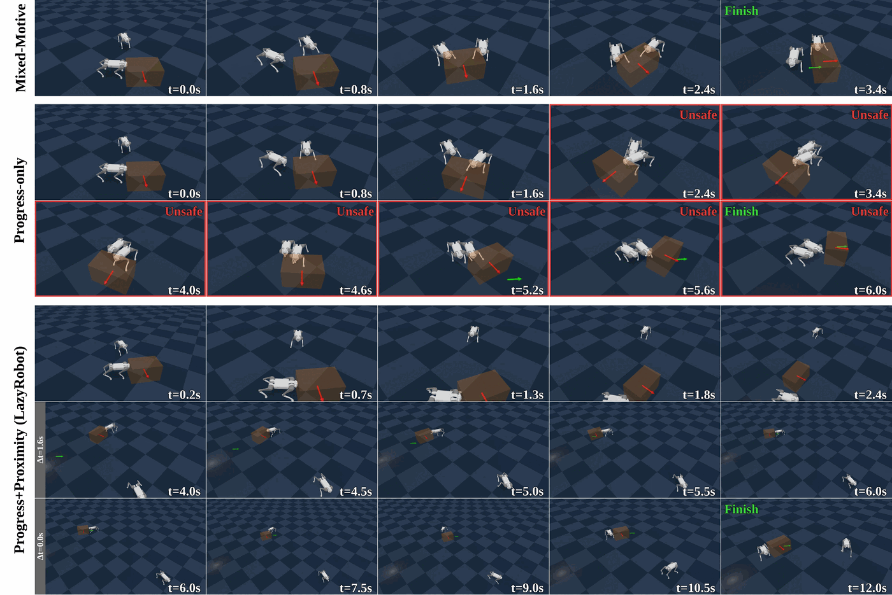
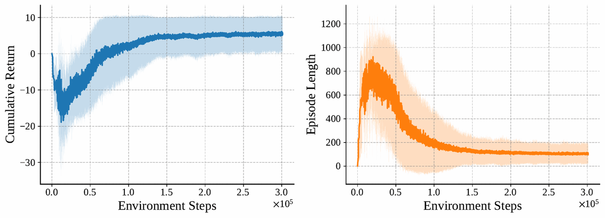

Safe and Fair Multi-Quadruped
Collaborative Box Pushing
Abstract
Multi-quadruped collaborative box pushing requires not only task progress but also safe inter-robot spacing and balanced effort. In our tests, reward formulations that emphasize only task progress lead to unsafe crowding or role imbalance where one robot does most of the pushing. We study this question using a standard MAPPO baseline that augments a task-progress reward with team-level shaping terms for proximity safety and effort fairness. Trained with centralized training and decentralized execution using shared-parameter MAPPO, our policy reaches strong success rates among the evaluated reward variants across easy, normal, and hard orientation scenarios (86%, 68%, 26%) while keeping unsafe proximity low and reducing role imbalance relative to progress-only and fairness-only baselines.
Results
Quantitative comparison of box pushing performance across orientation difficulty bins.
| Bin | Method | Success Rate ↑ | Comp. Time (s) ↓ | Unsafe Prox. Time % ↓ | Single-Robot Time % ↓ |
|---|---|---|---|---|---|
| Easy 30–60°, 1× diag | P+Proximity | 54.0 | 5.0 | 0.0 | 47.1 |
| Full-Shaping (ours) | 86.0 | 1.8 | 3.4 | 44.5 | |
| P+Fairness | 72.0 | 1.4 | 7.5 | 47.6 | |
| Progress-only | 54.0 | 1.6 | 10.1 | 51.8 | |
| Normal 90–120°, 2× | P+Proximity | 32.0 | 9.6 | 0.1 | 51.3 |
| Full-Shaping (ours) | 68.0 | 3.4 | 1.1 | 25.6 | |
| P+Fairness | 22.0 | 3.6 | 26.7 | 29.3 | |
| Progress-only | 64.0 | 4.0 | 53.7 | 49.4 | |
| Hard 150–180°, 4× | P+Proximity | 4.0 | 13.2 | 4.3 | 55.1 |
| Full-Shaping (ours) | 26.0 | 11.3 | 18.7 | 26.5 | |
| P+Fairness | 4.0 | 12.5 | 45.8 | 24.4 | |
| Progress-only | 18.0 | 8.2 | 54.4 | 30.1 |
Why single-objective shaping backfires. Adding only proximity or only fairness shaping degrades success relative to the progress-only baseline in the normal and hard bins. Each single shaping term admits a pathological equilibrium: proximity-only rewards the lazy strategy of disengagement, while fairness-only rewards crowding without spatial awareness. Full shaping keeps both team-level terms active in the return, so reducing the overall loss requires attending to proximity and fairness alongside pushing progress.

Representative rollouts from the same initial configuration. Top row — full shaping (carried in the figure under its earlier name, Mixed-Motive): the task completes in 3.4 s with both robots holding safe spacing. Bottom two rows — progress-only: the robots crowd the same contact region, violating safe proximity (red borders) and taking 6.0 s, nearly twice as long.

Cumulative return and mean episode length over training for the full-shaping objective. Episode length falls from the truncation horizon — every episode timing out while the policy is untrained — toward shorter, successful executions.
Poster
BibTeX
@inproceedings{li2026safefair,
title = {Safe and Fair Multi-Quadruped Collaborative Box Pushing},
author = {Li, Yuhao and Jose, Williard Joshua and Zhang, Hao},
booktitle = {ICRA Workshop on Multi-Agent Robotic Systems:
Real-World Collaboration and Interaction},
year = {2026},
url = {https://openreview.net/forum?id=HBHwvM839C}
}